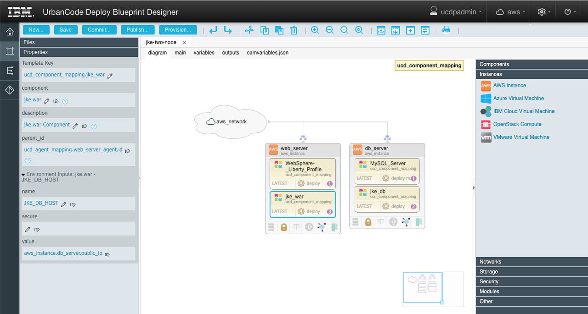
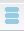
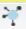
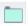

Editing Terraform blueprint diagram
You can edit Terraform blueprints in a graphical editor.
Before you begin
About this task
To edit a Terraform blueprint in the graphical editor, in the Files list,
open the appropriate folder and click on any file with the extension tf. The
Diagram tab shows the blueprint in a graphical editor.

The other tabs enable you to view and edit the source code for the blueprint. For more information, see Editing blueprint source code.
- The Components drawer shows components and tags from the Deploy server. This drawer also includes a resource named Referenced Component. This resource represents a generic component. You use the Referenced Component to represent a component that you specify later.
- The Catalogs drawer lists assets from vRealize Automation blueprints that are available for use, if you are connected to a VMware vRealize Automation cloud. To reuse these existing catalog items, you can drag one onto an empty blueprint.
- The Instances drawer shows the resources for creating virtual machines in cloud environments. You can drag these to the blueprint. This drawer is available only when editing a Terraform blueprint.
- The Networks drawer shows referenced networks and new networks. To connect a virtual machine to an existing network, use a referenced network. To create a new network in the cloud, use a new network.
- The Storage drawer shows cloud storage volumes. To add a storage volume, drag a volume to an instance and specify the mount point for the volume.
- The Security drawer shows security configurations that you can apply to an instance.
- The Modules drawer shows the Terraform modules that you have access to. To use a module, drag it onto the canvas and supply the module property values. This drawer is available only when editing a Terraform blueprint.
- The Policies drawer includes resources such as load balancers and autoscaling groups. This drawer is available only when editing a Heat blueprint.
- The Other drawer includes miscellaneous resources such as deployment sequence, load balancers, and null resource. A null resource is generally used to run Terraform provisioners on a virtual machine. This drawer is available only when editing a Terraform blueprint.
Resource names can contain only alphanumeric characters and the following special characters: hyphen (-) and underscore (_). If, when prompted, you enter a name containing unsupported characters, the Blueprint Designer replaces those characters with underscore character (_).
To search the palette contents, click Add
 , and then in the Add Element window filter field, enter your search
term. You can also change storage resource
, and then in the Add Element window filter field, enter your search
term. You can also change storage resource

, security resource (except VMware) , ip resource , connection
, provisioner, load balancer (AWS only) , resource group resource
(Azure only) and resource pool resource (VMware only) via the icon on an instance.Some resources can be connected. For example, you can connect an instance to a network by grabbing the networks connection icon and dragging to instance.
When you click a resource to select it, its properties are displayed in the Properties drawer, to the left of the editor. From this drawer, you can change property values or externalize them to properties as described in Externalizing properties in blueprints.
If the blueprint contains an error, warning, or unfinished TODO item, an icon
that represents the most serious types of item is displayed on the editor toolbar. For example, if
the blueprint contains at least one error, the error icon is displayed. Hover over the icon  to display a list of all items that you must correct or complete before you provision the
blueprint.
to display a list of all items that you must correct or complete before you provision the
blueprint.
When you add components to the blueprint, the editor automatically adds the resource tree
resource to the blueprint. This resource represents a base resource tree on the Deploy
server. If, on this resource, you specify the parent property, a forward slash character (/)
indicates a hierarchical relationship. For example, if you specify
/Cloud/Environment/OtherResources, then this resource tree will be added under
/Cloud/Environment/OtherResources.
- Edit variables
- Add or edit outputs
- Add an element to the blueprint. An alternative to using the Palette.
- Synchronize variables
with
camvariables.json. Only variable when working with Cloud Automation Manager projects.